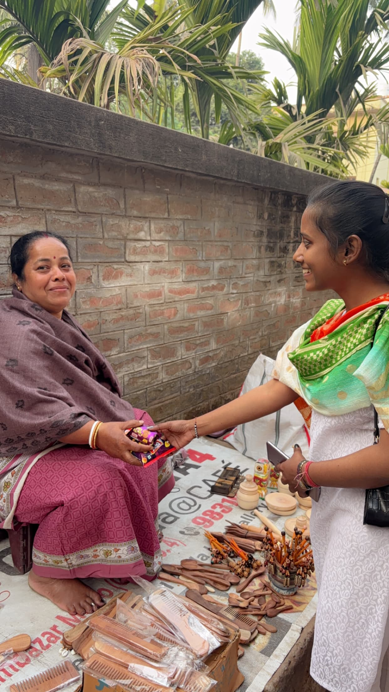

Our Projects

Project Seva
Providing food, clothing and essential supplies to underprivileged communities across India.

Project Bachpanshala
Ensuring quality education and learning opportunities for children from economically weaker backgrounds.

Project Jeev
Rescuing, protecting and feeding stray and injured animals while promoting compassion towards all living beings.

Project Udaan
Empowering women through skill development, financial independence and career opportunities.

Project Prakriti
Working towards environmental conservation through plantation drives, cleanliness campaigns and sustainability initiatives.
Project Vikas
Enhancing employability through internships, training and skill development programs for youth.